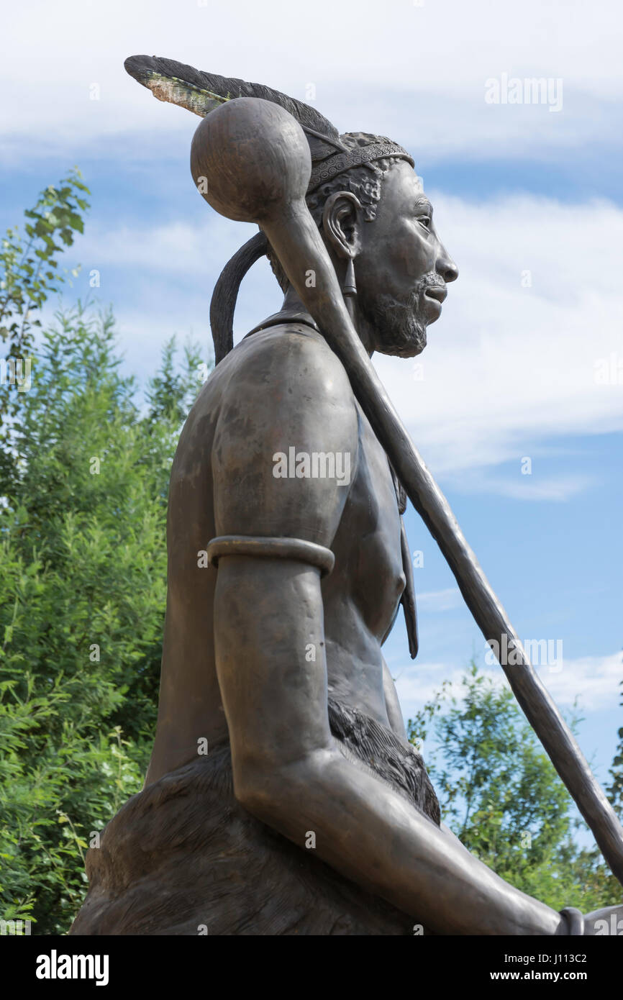

Explore the traditions, art, and beauty of the Basotho people — preserving heritage and inspiring generations. This website was created to celebrate and promote Basotho heritage.Learn about the customs, craftsmanship, music, and unity that define our nation. Discover stories that connect our past to our present and future.
